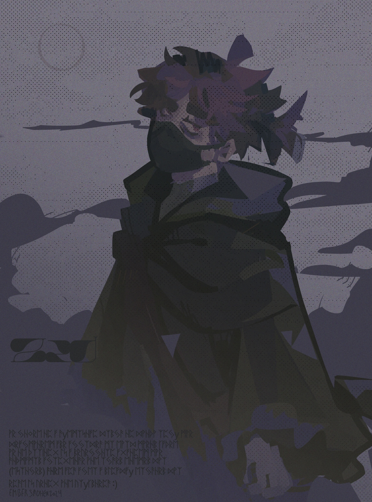
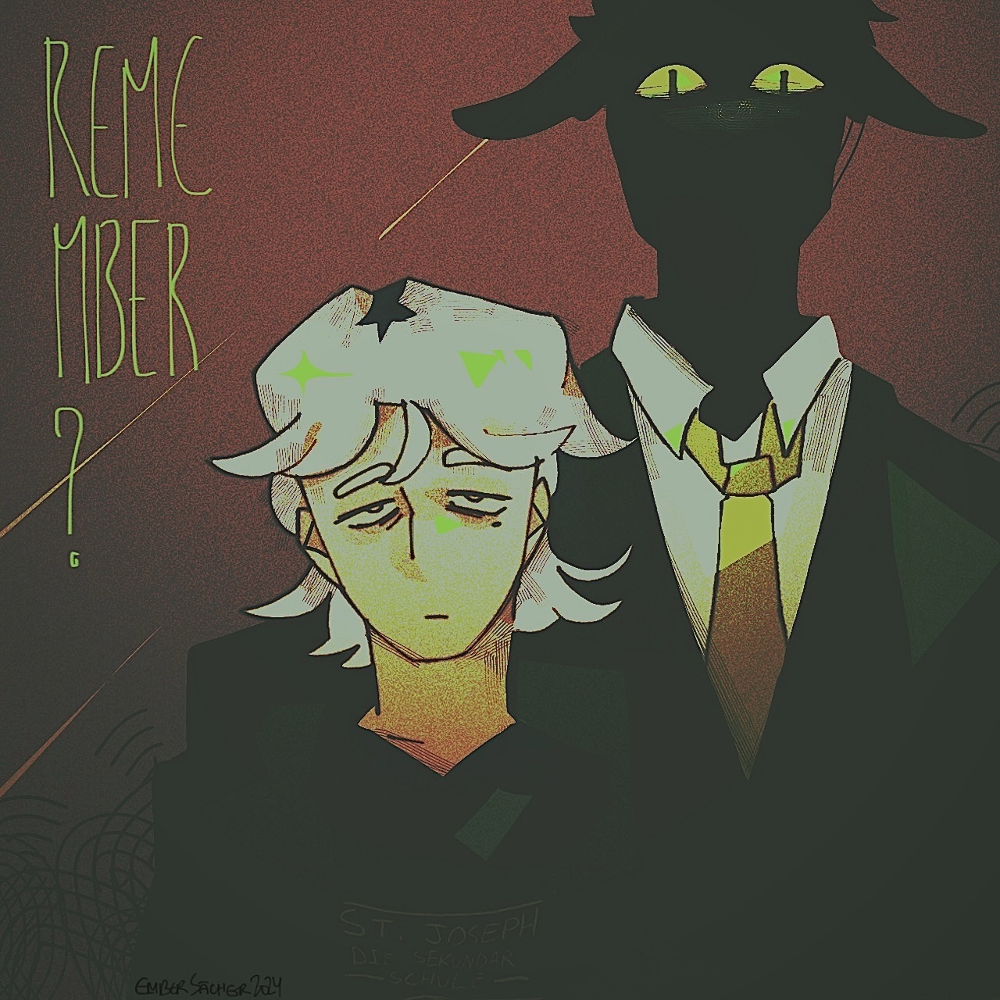
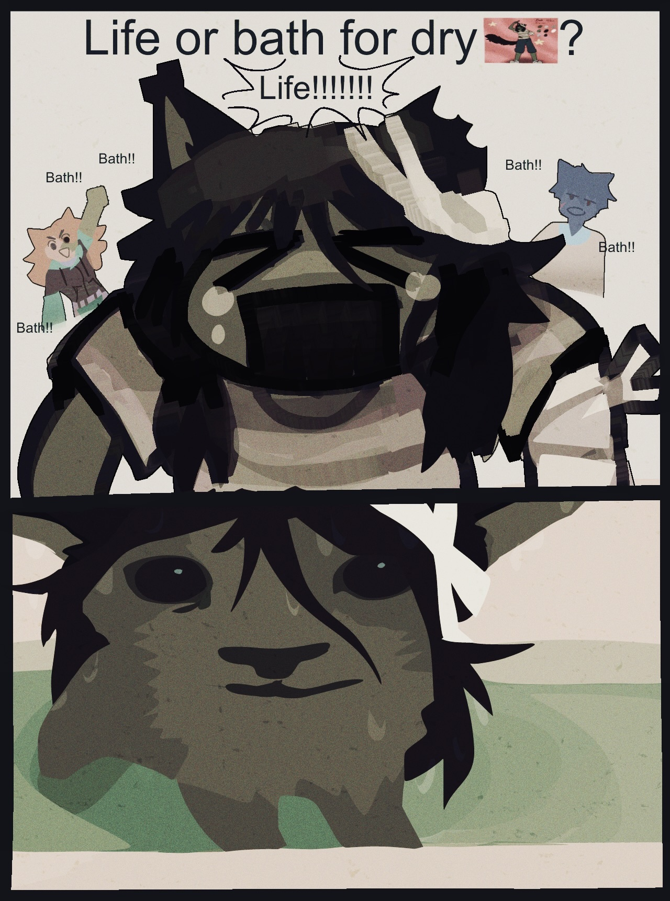

artfight attack compilation 1
credits & commentary are listed under each piece. image-heavy page ahead, loading may be slow. no alt texts on this one, sorry.
what was in my headphones this batch ? -- golden spiral (demo) ↗ (gore warning for the visualizer lol)

character featured above is: libra by ~the-friendly-lemon
starting off the season strong, i adored the style of this one.

zed by ~m1scellaneous_thing
OHHHH THIS CHARACTERRRR...... bitch u knowww i am a sucker for corrupt government storylines. for some odd reason the simplicity of the design was difficult to adapt into my own artstyle and i became so saddened by this. this chara compells me, i wanted to do him justice. luckily it came out super nice ToT ..i might be back next year, there is a soldier on my radar.

khojin kogane by ~Acronorth
star and marine imagery and gentle oc who stays strong thru thu the horrors, i am in heaven

bobert & sheepdog by ~booty
special shoutout to this user in particular who had such engaging oc lore, i read thru multiple profiles all the way to the bottom before i made my mind with these two guys. truly some top tier stuff

bob & others by ~SourSweet
this ones so silly, i loved drawing this one.

ohitsuji dawn by ~citrusfruitbat
i didnt use a reference for this one and i regret it immensely haha. i think i got my point accross fine thou.
from here on i would briefly attempt to do lineart-heavy pieces. dont know why i would do this, it knocked the wind out of me everytime.

cursed by ~CursedValk
cursedvalk had so many cool space-themed ocs i would have loved to draw, it was so hard deciding which to pick. i said i would attack again but i never got around to it, will def be coming back next year. a red dwarf is staring straight thru my crosshair. speaking of red dwarf.. i tried to look up 'parodytwt' to get more context to their lore, but all i found was a depressed DSMP tubbo RP blog, YEAH I DONT THINK I FOUND THE CORRECT PARODYTWT😭😭😭😭

alimars by ~saintlorelei
YIPPE WAHOO YAY. i love bumping into fellow indie-web folks, always a treat
urkkk this design was challenging but insanely fun, i was v indecisive w the pose but it ended up nicely i think. shoutout figurosity.

one by ~Mythbuster
you know... i was THIS close, THISSS close to drawing ship art for this chara. curse my insanely long backlog, were it not for that we would have seen childe x one. sad day for oc x canonn enjoyers everywhere